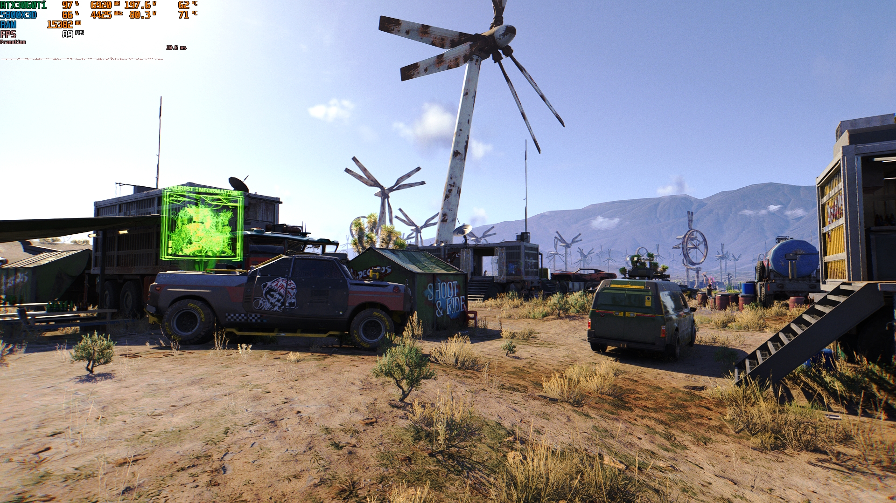
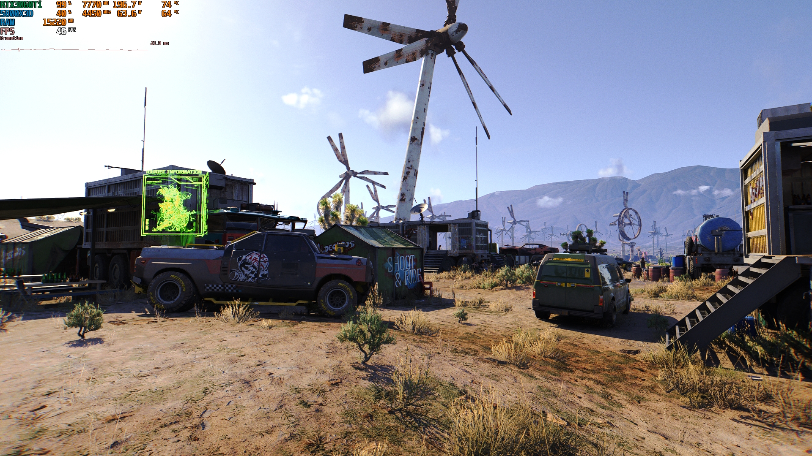

Na ovom primjeru možemo dokazati zašto je upscaling koristan. Na lijevoj slici sa 46FPS (sličica u sekundi)
koristimo običnu 1920x1080
rezoluciju. Na desnoj slici sa 89FPS koristimo DLSS s početnom rezolucijom 960x540 povećano na 1920x1080. Kvaliteta slike
je gotovo ista.